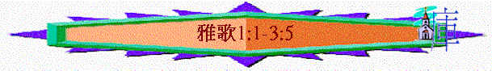

|
引言 |
看重的愛 |
同在的愛 |
甘甜的愛 |
等待的愛 |
同享的愛 |
超越的愛 |
雙向的愛 |
堅強的愛 |
保護的愛 |
結語 |
|
|
1:1-4 |
1:5-11 |
1:12-17 |
2:1-6 |
2:7-3:5 |
3:6-5:1 |
5:2-6:3 |
6:4-8:5 |
8:6-7 |
8:8-12 |
8:13-14 |
|
I.緒論
「所羅門的歌，是歌中的雅歌。（新娘）」1:1
一.書名
〜希伯來原文
“sir hassirim”，意思是歌中之歌，也是最美麗的歌，別的歌不可與相比。
〜中文雅歌，優雅之歌。
〜的確本書內容題及愛情，愛是人中間最大偉大，最感人的事，聖經也題及愛是最大的恩賜，無甚麼可相比，而「歌」通常有稱讚味道，一首歌如能稱讚人間，屬靈�堻怜隊j的事---愛，此首歌豈非平常的歌呢！
二.作者
「他作箴言三千句，詩歌一千零五首。」王上4:32
〜v.1已題及是所羅門，他一生寫詩、寫歌無數，由他寫愛情之歌，也十分適合，因為他是愛神之人，他也經歷愛情，有七百妃，六百嬪(最後妃嬪雖令他的心偏邪，但在經歷中，仍嘗過愛人，被人愛的經歷)，他也見識多，能用很多世界優美之物形容愛情。
三.地位
〜猶太人在逾越節時會詠唱雅歌，記念神拯救以色列民，對神選民深愛的事實
四.字眼
〜在和合本聖經，本書至少題及20多次「愛」的字眼(「愛情」「親愛」「所愛」「可愛」等字)
「願他用口與我親嘴；因你的愛情比酒更美。」1:2
「我心所愛的啊，求你告訴我，你在何處牧羊？晌午在何處使羊歇臥？我何必在你同伴的羊群旁邊好像蒙著臉的人呢？（新郎）」1:7
「求你們給我葡萄乾增補我力，給我蘋果暢快我心，因我思愛成病。」2:5
「他的口極其甘甜；他全然可愛。耶路撒冷的眾女子啊，這是我的良人；這是我的朋友。」5:16
「我所愛的，你何其美好！何其可悅，使人歡暢喜樂！」7:6
「愛情，眾水不能息滅，大水也不能淹沒。若有人拿家中所有的財寶要換愛情，就全被藐視。（新娘的兄弟）」8:7
〜在原文聖經，有關愛的意思超過40多次，而「良人」英文譯「beloved」也有愛的含意
五.中心----「愛的吸引」
「願他用口與我親嘴；因你的愛情比酒更美。你的膏油馨香；你的名如同倒出來的香膏，所以眾童女都愛你。願你吸引我，我們就快跑跟隨你。王帶我進了內室，我們必因你歡喜快樂。我們要稱讚你的愛情，勝似稱讚美酒。他們愛你是理所當然的。」1:2-4
「我的良人哪，求你快來！如羚羊或小鹿在香草山上。」8:14
「求你將我放在你心上如印記，帶在你臂上如戳記。因為愛情如死之堅強，嫉恨如陰間之殘忍；所發的電光是火焰的電光，是耶和華的烈焰。愛情，眾水不能息滅，大水也不能淹沒。若有人拿家中所有的財寶要換愛情，就全被藐視。（新娘的兄弟）」8:6-7
〜本書題及很多關乎「愛」的字眼，而開始與結尾，也講及愛(愛情與my
beloved)，究竟愛情有甚麼吸引，甚麼超越的地方，令双方彼此稱讚，令佳偶受吸引，也深願所愛的來臨，及願與對方同行呢？
〜本書作者用詩歌的方式，描繪稱讚愛，用世間事物，用他與佳偶的相戀經歷，一層一層將這種超凡吸引的愛表達出來，比酒，比金錢財寶更超越！
〜而作者更想用人世間超卓吸引的愛，帶出「耶和華烈焰愛情」，所以此書不單是一本人間愛情之歌，也是神與選民之間愛之歌，在新約中，也引出人間的愛，是反影基督與教會的愛之關係。
六.大綱
引言----愛的吸引1:2-4
1.
看重的愛 1:5-11
2.
同在的愛 1:12-17
3.
甘甜的愛 2:1-6
4.
等待的愛 2:7-3:5
5.
同享的愛 3:6-5:1
6.
超越的愛 5:2-6:3
7.
雙向的愛 6:4-8:5
8.
堅強的愛 8:6-7
9.
保護的愛 8:8-12
結語----愛的渴求8:13-14
七.注意
1.用正確的心去讀
〜本書題及「愛」「神的事情」性與愛本身是神的恩賜，是美的，人不當用歪念研讀此書，需用敬虔的心！
2.分清楚書中人物
〜很多將「你」「我」「妳」「他」「良人」「佳偶」男性與女性與同伴的說話混淆或調亂，在原文中，有性別之分，而「良人」指所愛的人，是指男主角，佳偶是女性，另外書中也有其他人物出現，例如士兵，佳偶的同伴，我們要留意歌中所說話是男性/女性，是誰說的。
3.用情歌意境細讀
〜本書是雅歌，是一首歌，描述愛情之歌，信徒不能單憑理性分析析愛情，有時愛是超越常理的，另外也不能同讀傳道書或羅馬書的方法，研究其脈絡，上文與下理，因為始終是一首歌，應用愛情之歌的意境細閱。
〜另外，有時詩歌會用一些誇張性的描述表達一種詩人的體會，我們有時也不可以按事實，按現實來分析。
4.更深思索神的話
〜嘗試從人間的愛情，想到神對人，對教會獨特的愛。
〜當想到基督的愛時，問問自己，可否吸引我，更願快跑跟隨祂呢？
II.內容
引言----愛的吸引1:2-4
1.愛的吸引
A.良人之愛比酒更美
「願他用口與我親嘴；因你的愛情比酒更美。」1:2
〜一開始，就題反「你的愛情」作為讚歎良人的愛情比酒更美，酒很多時
代表世界，令人陶醉，令人感到美，令人愁意消除，但只是一剎那，主的愛卻比世界更美，更長久，更令人陶醉，更值得稱讚。
B.良人自己流露馨香
「你的膏油馨香；你的名如同倒出來的香膏，所以眾童女都愛你。」1:3
〜「你的名」就是指「你」本人(名字代表那人)，膏油本身是香，如倒出來更香，不能隱藏，主的名----主自己如同倒出來的膏油，祂的生命，何等馨香，人不能掩蓋。
〜而歷世歷代，人也用了千千萬萬詩歌讚頌「主的名」，主的名在全地何其美！
2.人的心願
A.心願
a.
更深親近
「願他用口與我親嘴；因你的愛情比酒更美。」1:2
〜是第一個心願，不是滿足單停留在朝見中，是常與王親近，是想進王的內室。
b.更深跟隨
「願你吸引我，我們就快跑跟隨你。王帶我進了內室，我們必因你歡喜快樂。我們要稱讚你的愛情，勝似稱讚美酒。他們愛你是理所當然的。」1:4
〜不是單是慢慢跟隨，是「快跑」跟隨！
B.肯定----愛他
「願你吸引我，我們就快跑跟隨你。王帶我進了內室，我們必因你歡喜快樂。我們要稱讚你的愛情，勝似稱讚美酒。他們愛你是理所當然的。」1:4
〜更肯定不是一個人愛他，是很多人，是眾童女的！而愛他至是理所當然的！
〜但究竟「他的愛情」，有甚麼吸引，超凡的地方，下文有描述．．．
一.
看重的愛1:5-11
〜此段作者用了許多王室的用品、物件形容良人對佳偶的看重，沒有輕視她，反而尊重她！
1.佳偶感覺別人輕看她
「耶路撒冷的眾女子啊，我雖然黑，卻是秀美，如同基達的帳棚，好像所羅門的幔子。不要因日頭把我曬黑了就輕看我。我同母的弟兄向我發怒，他們使我看守葡萄園；我自己的葡萄園卻沒有看守。我心所愛的啊，求你告訴我，你在何處牧羊？晌午在何處使羊歇臥？我何必在你同伴的羊群旁邊好像蒙著臉的人呢？（新郎）」1:5-7
〜「基達的帳棚」亞拉伯以北的遊牧民族，居住在以黑羊毛織成的毛帳內，比喻主角的皮膚黑如毛帳
〜「所羅門的幔子」一定不是普道的幔子，是尊貴，是美麗的幔子
〜童女(佳偶)似乎感覺別人輕視她，她的家人、同伴亦不重視她，要她看守他們的萄葡園，但她卻覺自己雖黑仍秀美，不可能輕視的。
〜而她在不被人重視的環境中，渴求和良人一齊，因好比在自己的同伴像蒙着臉的人，不被人肯定與重視的。
2.良人卻十分重視佳偶
A.看她極其美麗
「你這女子中極美麗的，你若不知道，只管跟隨羊群的腳蹤去，把你的山羊羔牧放在牧人帳棚的旁邊。」1:8
B.看她尊貴華美
「我的佳偶，我將你比法老車上套的駿馬。你的兩腮因髮辮而秀美；你的頸項因珠串而華麗。我們要為你編上金辮，鑲上銀釘。（新娘）」1:9-11
〜「法老車上套的駿馬」：亞拉伯的馬已是十分出名的，但埃及的馬更美！而法老的更是駿馬中之好馬，是何等尊貴及美好的！
〜「珠串」「金辮」「銀釘」表達名貴與華麗
〜雖然人會輕看佳偶，但良人不會，看她十分尊貴華麗，我們的主何嘗不是呢？祂看教會如「新婦」，她看我們如「活石」，更看我們為君尊的祭司！何等重視我們！
二.同在的愛(1:12-17)
〜愛一個人，你自然會很想同他一同，本段作者用很多很近的比喻、物品來形容良人與佳偶的同在，他們彼此是那麼近。
1.在懷中
「王正坐席的時候，我的哪噠香膏發出香味。我以我的良人為一袋沒藥，常在我懷中。」1:12-13
〜「哪達」產於印度東及北部的名貴香膏，「沒藥」為當時女性採用的香膏，佳偶用常在懷中流露的香膏比喻良人與自己是何等的貼近或自己也想將良人放在心中，放在懷中。
2.在園��
「我以我的良人為一棵鳳仙花，在隱基底葡萄園中。（新郎）」1:14
〜隱基底盛產萄葡，加佳偶也有自己的園子，也以良人喻為園中的鳳仙花，時常見到的，十分欣賞的，也流露馨香。
3.在眼��
「我的佳偶，你甚美麗！你甚美麗！你的眼好像鴿子眼。（新娘）」1:15
〜良人在近距離中，望到佳偶的眼睛好像鴿子眼那般安得合式、清透(5:12)。
4.在床塌
「我的良人哪，你甚美麗可愛！我們以青草為床榻，以香柏樹為房屋的棟梁，以松樹為椽子。」1:16-17
〜佳偶愛慕良人，愛到一個地步，願以身邊之物，為床塌，為建築之物料，即時與良人一同居住。
〜基督也深愛我們，在升天後，差遺聖靈住在我們內心，更應許常與我們同在。
三.甘甜的愛(2:1-6)
〜本段用了很多果實、植物、筵宴形容因愛而帶來的甘甜充實感覺。
1.愛帶來欣賞
「我是沙崙的玫瑰花﹝或作：水仙花﹞，是谷中的百合花。（新郎）我的佳偶在女子中，好像百合花在荊棘內。（新娘）2:1-2
〜「沙崙」是迦密山旁的海濱平原，土地肥沃，盛產玫瑰，「百合花在荊棘內」更顯出眾
2.愛帶來甘甜
「我的良人在男子中，如同蘋果樹在樹林中。我歡歡喜喜坐在他的蔭下，嘗他果子的滋味，覺得甘甜。」2:3
3.愛帶來充實
「他帶我入筵宴所，以愛為旗在我以上。求你們給我葡萄乾增補我力，給我蘋果暢快我心，因我思愛成病。他的左手在我頭下；他的右手將我抱住。」2:4-6
〜「以愛為旗」人看見這筵宴上有愛為旗，是有愛的，佳偶感到需要良人帶來她有力、充實、心暢快！
〜主耶穌來到世間，不單給人生命，也要給人更充實豐盛的生命！
四.等待的愛(2:7-3:5)
〜愛一個人，不是要逼她行上你理想的地步，乃是等她自己情願，給她時間的，本段用了些動物比喻等待，不驚動的愛。
1.囑咐—不要驚動
「耶路撒冷的眾女子啊，我指著羚羊或田野的母鹿囑咐你們：不要驚動、不要叫醒我所親愛的，等他自己情願（不要叫醒……情願：或作不要激動愛情，等他自發）。」2:7
〜「羚羊」「母鹿」是很易受驚動的，若遇到威脅，牠們會用跳，用走離開敵人，易驚動的動物更明白何謂「不驚動」
2.窺探—千辛萬苦
「聽啊！是我良人的聲音；看哪！他躥山越嶺而來。我的良人好像羚羊，或像小鹿。他站在我們牆壁後，從窗戶往裡觀看，從窗櫺往裡窺探。」2:8-9
3.渴求—相見同行
「我良人對我說：（新郎）我的佳偶，我的美人，起來，與我同去！因為冬天已往，雨水止住過去了。」2:10-11
「無花果樹的果子漸漸成熟；葡萄樹開花放香。我的佳偶，我的美人，起來，與我同去！我的鴿子啊，你在磐石穴中，在陡巖的隱密處。求你容我得見你的面貌，得聽你的聲音；因為你的聲音柔和，你的面貌秀美。」2:14-15
〜「冬天已往，雨水止住」在中東一帶，冬天就是雨季，冬天已過，正是大地回春，良人渴望能見到双方，並與對方一同同行，保護園子，不給狐狸毀壞。
4.矜持—暫不同去
「我的良人哪，求你等到天起涼風、日影飛去的時候，你要轉回，好像羚羊，或像小鹿在比特山上。」2:17
〜佳偶此乎不想即時與良人同去，容良人回到自己地方牧放群羊
〜但她仍渴慕良人早日轉回
〜「比特山」指有縫隙的峻嶺上
5.自願—尋找良人
A.尋找
「我夜間躺臥在床上，尋找我心所愛的；我尋找他，卻尋不見。我說：我要起來，遊行城中，在街市上，在寬闊處，尋找我心所愛的。我尋找他，卻尋不見。」3:1-2
B.遇見
「城中巡邏看守的人遇見我；我問他們：你們看見我心所愛的沒有？我剛離開他們就遇見我心所愛的。我拉住他，不容他走，領他入我母家，到懷我者的內室。」3:4
C.找緊
〜當佳偶遇良人，不矜持等待，十分心急地捉緊良人，領祂回到自己家中
6.總結—等待的愛
「耶路撒冷的眾女子啊，我指著羚羊或田野的母鹿囑咐你們：不要驚動、不要叫醒我所親愛的，等他自己情願（不要叫醒至情願：或作不要激動愛情，等他自發）。」3:5